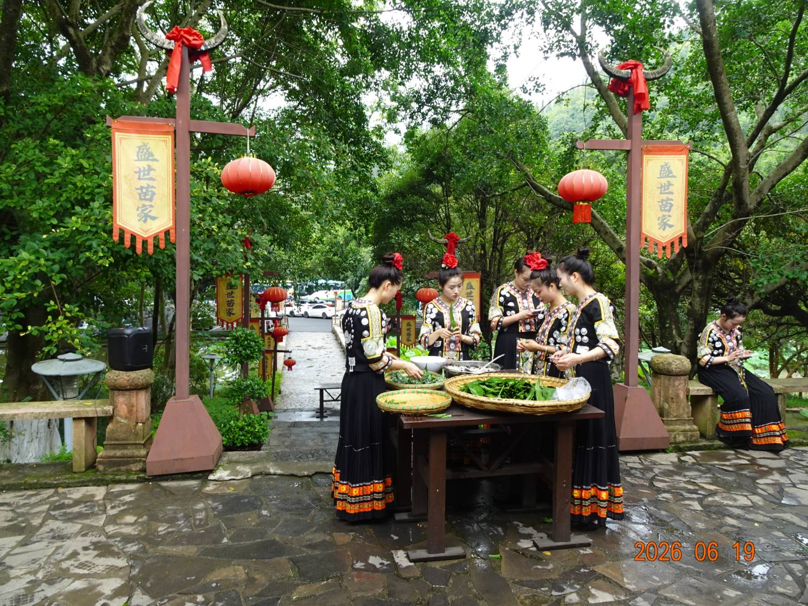

🌊 啟程：探尋「地球上最美麗的疤痕」
清晨，天空飄著細雨，我們懷著朝聖的心情前往位於貴州興義市的馬嶺河峽谷。
在出發前的功課裡，這條因地殼運動而形成的巨型喀斯特地縫，早就在文字裡震撼了我無數次。它被譽為「地球上最美麗的疤痕」。整個峽谷集雄、楚、險、秀於一體，全長約70多公里，深達200—400公尺。想像中，那是兩岸峭壁對峙、谷底河水奔騰的蠻荒與壯美。
然而，大自然總有它自己的脾氣。當我們抵達景區時，連日的大雨讓馬嶺河的水位暴漲，滾滾黃水無情地淹沒了原本供遊客步行的谷底棧道。站在景區入口，我無奈地在群組裡跟朋友們傳了訊息，記錄下這份與谷底擦肩而過的遺憾：
📷 峽谷影像紀錄位置（相片 1-6 依此類推）
🌉 橋上的震撼：萬馬奔騰的群瀑飛流與百里畫廊
雖然無法親自步入地縫深處成了一種遺憾，但當我們走到橫跨峽谷的大橋上往下俯瞰時，那份遺憾瞬間被眼前狂野的奇景沖刷得無影無蹤！
正因為這場暴雨，反而催生了最震撼的「群瀑飛流」。在馬嶺河僅約1.7公力的核心路段內，就聚集了十餘條高逾百公尺的壁掛瀑布。此時此刻，它們全數全開，如萬馬奔騰般從峭壁頂端轟鳴而下，撞擊在谷底，激起漫天瀰漫的水霧，氣勢磅礴！
不僅如此，峽谷兩壁孕育著規模宏大的鈣華壁掛（石幔）。千百年間，富含碳酸鈣的地下水在岩壁上沉澱，形成了大片翠綠、金黃、灰白的天然壁畫。此時在風雨氤氳中，這座巨大的立體國畫長廊——「百里畫廊」，顯得更為古老而神祕。
🎬 影片 1：大雨鎖谷、峽谷飛瀑萬馬奔騰紀錄（原影片1、2合成）
朋友在群組裡回覆的那一個「壯」字，簡直道盡了我們站在橋上，被大自然力量震懾得說不出話來的真實心境。
🍃 因禍得福：盛世苗家的手作溫度與端午安康
旅途的迷人之處就在於，當大自然為你關上一扇門，在地的溫暖人情總會為你打開另一扇窗。從橋上下來後，我們走進了景區內的苗族聚落。
空氣中飄散著粽葉的清香與糯米的甜味。這場意外的民俗體驗，成了此行最溫柔的收穫。這些熱情的苗族姑娘們身穿銀飾閃爍的黑底傳統盛裝，頭戴大紅花，笑靨如花。她們在院落的木桌前，熟練地整理著剛採摘下來、翠綠欲滴的粽葉。我們也忍不住捲起袖子加入其中，跟著她們一折、一填、一綁，細細感受著苗家傳統節慶的溫度。
走進這座有著池塘小橋、宛如國畫庭園的「盛世苗家」四合院，風雨似乎都被隔絕在外。接著，院子裡響起了歡快的樂音與吆喝聲。大家圍成一圈，開始了熱鬧的打麻糬（打糍粑）活動。沉重的木杵在大家齊心協力下一上一下地擣著石臼裡的糯米，身著盛裝的苗家姑娘們在一旁拍手歡笑，甚至親自幫忙使勁，咚咚的木杵聲是當天最快樂的交響樂。

📷 苗家活動影像紀錄（相片 8-13 依此類推）
🎬 影片 2：盛世苗家手作粽子與歡樂打麻糬民俗紀錄（原影片3-5合成）
🗺️ 旅人筆記：關於馬嶺河的歲月流轉
看著朋友的疑問，我坐在避雨的長椅上，一邊回味著剛打好、熱騰騰的麻糬，一邊在手機上敲下了這段關於馬嶺河的歷史。其實，這裡並非新開發的景點，它的美，已經默默在時光裡沉澱了三十多年。
- 1993年（初具景區雛形）： 成立了馬嶺河「五環漂流公司」，率先開啟了大西南的峽谷漂流觀光，馬嶺河峽谷正式作為旅遊景點對外開放。
- 1994年1月10日（正式確立國家級景區地位）： 經國務院審批公佈，馬嶺河峽谷被批准為第三批國家重點風景名勝區，標誌著其作為國家級景區的正式誕生與規範化發展。
✍️ 2026.06.19 暮色隨筆
在傍晚準備離開興義時，回望那條隱沒在煙雨中的巨大地縫，心裡滿是繾綣。沒能走完谷底棧道是遺憾嗎？或許吧。但如果不是這場大雨，我們又怎能見證群瀑如萬馬奔騰的極致狂野？又怎會有時間停下腳步，在盛世苗家的屋簷下，與一群年輕活潑的苗族阿妹一起綁粽子、打糍粑，度過一個如此難忘的端午佳節？
遺憾是旅途的調味料，而人情，則是讓回憶永不褪色的防腐劑。馬嶺河，我們終會再見。